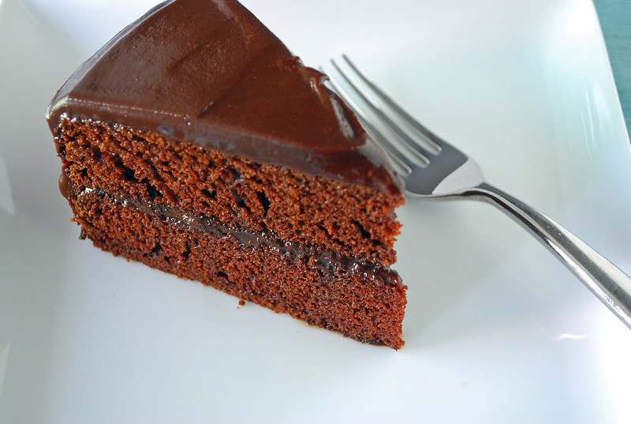

Chocolate Cake

Picture taken by Slice of Chic https://www.flickr.com/photos/sliceofchic/5064794605
This is a simple recipe to make a chocolate cake for those interested in baking. It should take about an hour to prepare and bake. Hope you enjoy it.
Ingredients
- 2 cups of white sugar
- 1 ¾ cups all-purpose flour
- ¾ cup unsweetened cocoa powder
- 1 ½ teaspoons baking powder
- 1 ½ teaspoons baking soda
- ½ cup vegetable oil
- 2 large eggs
- 1 teaspoon salt
- 1 cup milk
- 2 teaspoons vanilla extract
- 1 cup boiling water
Recipe
- Preheat the oven to 175 degrees Celsius. Grease and flour two 9-inch round baking pans.
- Stir sugar, flour, cocoa, baking powder, baking soda, and salt together in a large bowl.
- Add eggs, milk, oil and vanilla; mix for 2 minutes on medium speed with an electric mixer.
- Stir in the boiling water. The batter will be thin.
- Pour evenly into the prepared pans.
- Bake in the preheated oven until a toothpick inserted into the center comes out clean, about 30 to 35 minutes. Cool in the pans for 10 minutes, then transfer to a wire rack to cool completely.
- Enjoy the cake!
Home